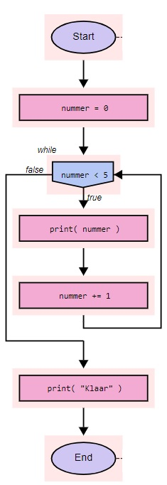

Hoofdstuk 7a - Iteraties: While-loop
Let op: log eerst in bij repl.itMeteen naar de Afsluitende Opgaven over While loops
Meteen naar de Gemengde Opgaven met While en For loops
Terug naar de cursus pagina
Computers raken niet verveeld. Als een computer een taak honderdduizenden malen moet herhalen, protesteert hij niet. Mensen daarentegen houden niet van teveel herhaling. Daarom moeten herhalende taken aan een computer worden overgelaten. Alle programmeertalen ondersteunen herhalingen. De klasse programmeerconstructies die herhalingen mogelijk maken heten “iteraties.” Een veelgebruikte term is “loops” (Engels, spreek uit: “loeps” – dit woord kun je netjes vertalen als “lussen,” maar dat zeggen programmeurs nooit).
Dit hoofdstuk legt uit wat je moet weten over loops in Python. Als programmeren helemaal nieuw voor je is, zul je wellicht het gevoel krijgen dat loops een lastig onderwerp zijn. Als dat zo is, neem dan de tijd voor dit hoofdstuk, en werk eraan totdat je zeker weet dat je alles snapt. Loops zijn zo’n basaal programmeerconcept dat je ze goed moet begrijpen. Elk hoofdstuk dat hierna komt maakt gebruik van loops.
while loop intro
Stel dat je vijf keer een strafregel moet schrijven, wellicht zou je dat als volgt coderen:
print("Ik zal nooit meer vergeten om mijn informatica huiswerk te maken." )
print("Ik zal nooit meer vergeten om mijn informatica huiswerk te maken." )
print("Ik zal nooit meer vergeten om mijn informatica huiswerk te maken." )
print("Ik zal nooit meer vergeten om mijn informatica huiswerk te maken." )
print("Ik zal nooit meer vergeten om mijn informatica huiswerk te maken." )
Maar wat als je 500 strafregels moet schrijven? Hiervoor kun je een loop gebruiken.
De eerste loop die ik bespreek is de while loop. Een while statement lijkt heel veel op een if statement. De syntax is:
while < boolean voorwaarde >:
< acties >
Net als bij een if statement, test een while statement een boolean expression, en als de voorwaarde True oplevert, wordt het blok code onder de while uitgevoerd. Echter, in tegenstelling tot een if statement, gaat Python, wanneer het blok code uitgevoerd is, terug naar de boolean voorwaarde na de while, en test die opnieuw. Als de voorwaarde nog steeds True oplevert, dan wordt het blok code nogmaals uitgevoerd. En als het is uitgevoerd, keert Python wederom terug naar de boolean voorwaarde. Dit wordt steeds herhaald, totdat de boolean voorwaarde False oplevert. Pas op dat moment slaat Python het blok code onder de while over en gaat eronder verder.
Merk op dat als de boolean voorwaarde meteen False oplevert de eerste keer dat Python hem ziet, dan wordt het blok code onder de while onmiddellijk overgeslagen, net zoals gebeurt bij een if statement.
Vaak maak je bij de while herhaling gebruik van de volgende opbouw:
De variabele:
1a) Bepaal wat de variabele is, dus wat veranderd er steeds (vaak is dit een teller om te tellen hoe vaak je al herhaalt hebt).
1b) Geef de variabele een begin waarde (meestal is dit 0, maar soms een ander getal)
De herhaling
while:
2a) Bepaal wat de voorwaarde voor herhaling is. Wat moet True zijn (vaak is dit dat de teller kleiner is dan een bepaalde waarde). Dit is de boolean voorwaarde schrijf je meteen na de while.
2b) Bepaal wat je steeds wilt herhalen, de acties.
2c) Verander de variabele (meestal verhogen met 1).
while < boolean voorwaarde >: < acties > < variabele aanpassen >
Het bovenstaande voorbeeld wordt met een while loop dan:
aantal_strafregels_geschreven = 0 #teller
while aantal_strafregels_geschreven < 5: #zolang nog geen 5 zijn afgedrukt, herhaal:
print("Ik zal nooit meer vergeten mijn informatica huiswerk te maken." )
aantal_strafregels_geschreven += 1 #verhooog de teller
Opgave 7.1.1.0 Tellen tot 10.
Deze opdracht wordt nog niet automatisch gecontroleerd. Klik hier om je eigen oplossing te vergelijken met een model oplossing.while loop voorwaarde
Bij de while loop moet je altijd voorzichtig zijn met de voorwaarde. Daar worden ook de meeste fouten gemaakt.
Opgave 7.1.1.1 Tot en met 10 tellen
Deze opdracht wordt nog niet automatisch gecontroleerd. Klik hier om je eigen oplossing te vergelijken met een model oplossing.Stroomdiagram voor de while loop
Het printen van de nummers 0 tot en met 4 kun je met een while loop als volgt doen:
nummer = 0
while nummer < 5:
print( nummer )
nummer += 1
print( "Klaar" )
Deze code wordt ook weergegeven in het onderstaande stroomdiagram.
Het is van essentieel belang dat je deze code snapt, dus ik neem hem stap voor stap door.
De eerste regel initialiseert een variabele nummer. Dit is de variabele die de code gaat afdrukken, dus hij wordt geïnitialiseerd op 0, omdat 0 de eerste waarde is die afgedrukt moet worden.
Dan start de while loop. De boolean voorwaarde zegt nummer <= 5. Omdat nummer 0 is, en 0 kleiner is dan 5, levert de voorwaarde True. Dus wordt het blok code onder de while uitgevoerd.
De eerste regel van het blok code print de waarde van nummer, dus 0. De tweede regel telt 1 op bij de waarde van nummer, zodat nummer nu 1 is. Python gaat daarna terug naar de boolean voorwaarde. De laatste regel van het programma, het printen van het woord “Klaar,” wordt dus (nog) niet uitgevoerd omdat hij niet in het code blok van de loop zit, en de loop nog niet afgelopen is.
- Omdat
nummergelijk aan 1 is, evalueert de boolean voorwaarde nog steeds alsTrue. Het blok code wordt dus nogmaals uitgevoerd. 1 wordt afgedrukt,nummerkrijgt waarde 2, en de code keert terug bij de boolean voorwaarde. - Omdat
nummergelijk aan 2 is, evalueert de boolean voorwaarde nog steeds alsTrue. Het blok code wordt dus nogmaals uitgevoerd. 2 wordt afgedrukt,nummerkrijgt waarde 3, en de code keert terug bij de boolean voorwaarde. - Omdat
nummergelijk aan 3 is, evalueert de boolean voorwaarde nog steeds alsTrue. Het blok code wordt dus nogmaals uitgevoerd. 3 wordt afgedrukt, 'nummer' krijgt waarde 4, en de code keert terug bij de boolean voorwaarde. - Omdat
nummergelijk aan 4 is, evalueert de boolean voorwaarde nog steeds alsTrue. Het blok code wordt dus nogmaals uitgevoerd. 4 wordt afgedrukt, 'nummerkrijgt waarde 5, en de code keert terug bij de boolean voorwaarde. - Omdat
nummergelijk aan 5 is, evalueert de boolean voorwaarde alsFalse(aangezien 5 niet kleiner dan 5 is). Het blok code wordt overgeslagen, en Python gaat verder met de eerste regel na het blok code. Dat is de laatste regel van het programma. Het woord “Klaar” wordt afgedrukt, en het programma eindigt.
Opgave 7.1.1.2 Even getallen afdrukken
Deze opdracht wordt nog niet automatisch gecontroleerd. Klik hier om je eigen oplossing te vergelijken met een model oplossing.Meer doen in een while loop
Stel dat je de gebruiker moet vragen om drie getallen, ze moet optellen, en dan het totaal moet laten zien. Zonder while loop zou dat er zo uit zien:
totaal = 0 #houd een variabele voor het totaal bij
invoer = input("Geef een getal: ") #vraag de gebruiker om invoer
num1 = int(invoer) #zet de invoer om in een getal
totaal += num1 #tel num1 bij het totaal op
invoer = input("Geef een getal: ")
num2 = int(invoer)
totaal += num2 #tel num2 bij het totaal op
invoer = input("Geef een getal: ")
num3 = int(invoer)
totaal += num3 #tel num3 bij het totaal op
print( "Totaal is", totaal )
Opgave 7.1.2.1 Som berekenen met een while loop
Deze opdracht wordt nog niet automatisch gecontroleerd. Klik hier om je eigen oplossing te vergelijken met een model oplossing.
Nog meer doen in een while loop
Als je de vorige voorbeeld begrijpt, begrijp je waarschijnlijk ook hoe je de gebruiker kunt vragen om vijf getallen, en dan de som van de vijf te berekenen:
aantal_getallen = 0
totaal = 0
while aantal_getallen < 5:
invoer = input( "Geef een nummer: " ) #vraag de gebruiker om invoer
ingevoerde_getal = int( ingevoerde_getal ) #zet de invoer om in een getal
totaal += ingevoerde_getal #tel de ingevoerde waarde op bij het totaal
aantal_getallen += 1
print( "Totaal is", totaal )
Bestudeer bovenstaande code. Er worden twee variabelen gebruikt. totaal wordt gebruikt om de vijf getallen in op te tellen. totaal begint op nul, omdat bij de start van het programma nog geen getallen ingegeven zijn, dus het totaal is nul. aantal_getallen wordt gebruikt om te tellen hoe vaak de loop doorlopen is. Omdat de loop vijf keer uitgevoerd moet worden, start teller op nul en de boolean voorwaarde voor de loop test of teller kleiner is dan 5. Dus aantal_getallen moet iedere keer dat de loop doorlopen wordt met 1 verhoogd worden, zodat na vijf keer doorlopen de boolean voorwaarde False is.
Je vraagt je misschien af waar ik aantal_getallen liet starten bij 0 en de boolean voorwaarde liet testen of aantal_getallen < 5. Waarom begon ik niet bij aantal_getallen = 1 en heb ik niet aantal_getallen <= 5 getest? De reden is gewoonte: programmeurs zijn gewend om indices bij 0 te laten beginnen en als ze tellen, te tellen “tot maar niet inclusief.” Als je verder gaat met programmeren zul je ontdekken dat de meeste code deze gewoonte naleeft. De meeste standaard programmeerconstructies die indices gebruiken, doen het ook zo. Mijn advies is daarom dat je hieraan gewend raakt, want dat zal code gemakkelijker leesbaar maken.
Opmerking: De variabele aantal_getallen is wat programmeurs een “wegwerp variabele” noemen. Het enige doel van deze variabele is te tellen hoe vaak de loop doorlopen is. De variabele heeft geen echte betekenis voor de loop, in de loop, of nadat de loop afgelopen is. Programmeurs kiezen vaak één-letter namen voor dit soort variabelen, meestal i of j (ik neem aan dat i ooit begonnen is als afkorting voor “integer,” en j gekozen is omdat het na i komt). In het voorbeeld heb ik voor de duidelijkheid de naam aantal_getallen gekozen, maar een i was acceptabel geweest.
Opgave 7.1.2.2 Gemiddelde berekenen
Deze opdracht wordt nog niet automatisch gecontroleerd. Klik hier om je eigen oplossing te vergelijken met een model oplossing.De while loop onder controle van de gebruiker
Als je van te voren niet precies weet hoe vaak je iets wilt herhalen, kun je geen for loop gebruiken. Dan moet je een while loop gebruiken.
Met een while loop kan je veel meer dan met een for loop, maar hij is wel iets lastiger.
Stel je wilt een gebruiker een aantal getallen laten invoeren en die getallen optellen. Je wil de gebruiker zoveel getallen laten ingeven als hij wil, zelfs geen getallen. Dan weet je niet weet hoe vaak de loop doorlopen moet worden. In plaats daarvan bepaalt de gebruiker hoe vaak de loop doorlopen wordt. Je kan met de gebruiker afspreken dat je steeds getallen blijft vragen totdat hij een -1 invoert.
Het algoritme is dan: zolang de gebruiker geen -1 invoert blijven we het volgende herhalen: vraag een getal en tel deze bij mijn totaal op.
De code hieronder laat zien hoe je een while loop kunt opzetten die de gebruiker zoveel getallen laat ingeven als gewenst. De gebruiker stopt met het ingeven van getallen door een -1 in te geven. Het totaal wordt afgedrukt wanneer de loop beëindigd is.
invoer_nummer = 0
totaal = 0
invoer = input( "Geef een nummer (of -1 op te stoppen): " ) #vraag gebruiker eerste getal in te voeren
invoer_nummer = int( invoer ) #zet de invoer om in een getal
while invoer_nummer != -1: #zolang geen -1 is ingevoerd, herhaal dan:
totaal += invoer_nummer #tel ingevoerde getal bij het totaal
invoer = input ( "Geef een nummer (of -1 op te stoppen): " ) #vraag gebruiker om een getal in te voeren
invoer_nummer = int (invoer)
print( "Totaal is", totaal ) #druk aan einde het totaal af
Opgave 7.1.3 Bereken gemiddelde, de gebruiker bepaalt hoeveel getallen
Deze opdracht wordt nog niet automatisch gecontroleerd. Klik hier om je eigen oplossing te vergelijken met een model oplossing.Eindeloze loops
De code hieronder drukt alle getallen van 0 tot 5 (tot en met 4) op. De loop bevat een fout. Kijk of je de fout weet te vinden (zonder de code uit te voeren!).
teller = 0
while ( teller < 5 ):
print( teller )
De titel boven deze paragraaf gaf het antwoord natuurlijk al weg: deze code bevat een loop die nooit eindigt. Als je hem uitvoert, lijkt het alsof het programma “hangt,” dus wel draait maar niks doet. Maar het doet niet niks, het is zelfs hoogst actief, maar het is bezig een nooit-eindigende optelling uit te voeren. nummer begint bij 1, maar wordt in de loop niet gewijzigd. Daarom wordt de boolean voorwaarde nooit False. Dit is een “eindeloze loop.” Dit soort loops zijn het grootste gevaar als je while loops bouwt.
Als je deze code uitvoert kun je de uitvoering van code onderbreken door op het 'stop' te drukken.
Omdat iedere programmeur zo nu en dan per ongeluk een eindeloze loop schrijft, is het een goed idee als je, wanneer je begint met het schrijven van een while loop, onmiddellijk een regel code toevoegt die een wijziging maakt in hetgeen getest wordt in de boolean voorwaarde, zodat je dat niet vergeet. Bijvoorbeeld, als je schrijft while i < 10, dan schrijf je er meteen de regel i += 1 onder, en daarna begin je de rest van de code tussen deze twee regels toe te voegen.
Opgave 7.1.4 Fout herstellen in de loop
Deze opdracht wordt nog niet automatisch gecontroleerd. Klik hier om je eigen oplossing te vergelijken met een model oplossing.Loop controle met een logische vlag
Soms wil je het aantal keren dat iets herhaald wordt afhankelijk is van wat er tijdens de uitvoer gebeurt. Bijvoorbeeld, iemand moet steeds een getal raden totdat ze het goed hebben. Raden ze het getal goed, dan spring je uit de lus.
Dit kun je voor elkaar krijgen door een logische vlag (in het Engels: Boolean Flag) die halverwege de lus een nieuwe waarde krijgt. In het voorbeeld heet de vlag 'goed_geraden'. Deze begint op 'False' (niet waar). In de conditie van de herhaling wordt gekeken of deze nog op 'False' staat, in dat geval wordt de herhaling uitgevoerd. Zodra er goed geraden is krijgt deze een nieuwe waarde, 'True'. Hierdoor zal de herhaling niet meer uitgevoerd worden.
TE_RADEN_GETAL = 5
goed_geraden = False #om te beginnen staat de vlag op False
while not goed_geraden: #herhaal zolang vlag nog op False staat
invoer = input( "3 + 2 = " ) #stel de quiz vraag
gebruikers_antwoord = int( invoer )
if gebruikers_antwoord == TE_RADEN_GETAL: #goed geraden
goed_geraden = True #de vlag wordt op True gezet, hierna zal de while loop niet opnieuw uitgevoerd gaan worden
print("Goed geraden!")
else: #fout geraden
print("Jammer, fout... probeer het opnieuw")
print("Klaar")
Trouwens: in sommige online cursussen zul je misschien iets lezen over een 'break'opdracht om uit een lus uit te springen. Dit is een zeer slechte gewoonte en is fout.
Opgave 7.1.5.1 Logische Vlag
Deze opdracht wordt nog niet automatisch gecontroleerd. Klik hier om je eigen oplossing te vergelijken met een model oplossing.Uitgebreide conditie met logische vlag
Soms heb je een uitgebreidere conditie nodig. Bijvoorbeeld, dat de gebruiker hooguit drie pogingen krijgt voor het invoeren van een pincode. Je hebt dan een teller nodig om bij te houden hoe vaak er al (fout) geraden is. Je moet in de conditie van de herhaling controleren op:
de waarde van de logische vlag, en
de waarde van de teller.
Opgave 7.1.5.2 Hooguit 3 pogingen voor een pincode
Deze opdracht wordt nog niet automatisch gecontroleerd. Klik hier om je eigen oplossing te vergelijken met een model oplossing.Wat je geleerd hebt over Iteraties met een while-loop
In dit hoofdstuk is het volgende besproken:
- Wat loops zijn
whileloops- Eindeloze loops
- Conditie met een logische vlag
Verder naar de Afsluitende Opgaven over While loops
Verder naar de Gemengde Opgaven met While en For loops
Terug naar de cursus pagina